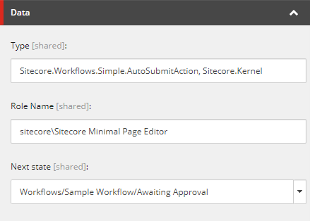
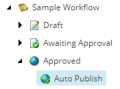

Standard and custom actions
Overview of the standard Auto Submit Action, Auto Publish Action, Email action and Validation action. Also mentions custom actions.
Sitecore contains a number of standard actions. You can also create custom actions and configure them to call .NET methods.
Auto Submit Action
The Auto Submit Action moves the content item to the next state if the user belongs to the specified role.
|  |
It is based on the /sitecore/Templates/System/Workflow/Auto Submit Action template.
The Data section contains the following fields:
Field | Value |
|---|---|
Type | The construct |
Role Name | The only role that the action is available to. You can only enter one role, and you receive an error if the field is empty. |
Next State | When the action is triggered, it moves the content item to the state specified in this field. |
Auto Publish Action
The Auto Publish Action appears under the Approved state of the Sample Workflow.
|  |
It is based on the common /sitecore/Templates/System/Workflow/Action template.
The Data section contains the following fields:
Field | Value |
|---|---|
Type | The construct |
Parameters | The deep parameter that specifies whether the child items are published.
|
Email action
This Email action sends email messages.
It is based on the /sitecore/templates/System/Workflow/Email Action template.
The Data section contains the following fields:
Field | Value |
|---|---|
To | The email address of the recipient. |
From | The email address of the sender. |
Subject | The subject of the email. |
Message | The message. The default field type is Memo. You can change this field to send messages of any type. |
Mail server | The URL of the SMTP server used to send emails. |
Type | Use this field to override the provided .NET implementation method with a custom method. The construct |
Validation action
The Validation Action executes the validation rules specified in the Validation Rules field of a workflow.
It is based on the /sitecore/Templates/System/Workflow/Validation Action template.
The Data section contains the following fields:
Field | Value |
|---|---|
Type | This field inherits the value |
Max Result | The maximum response from the validator. The possible values are:
If the value of this field is Error, items with errors passes, but items with critical or fatal errors do not pass. Validator classes define errors that result in specific validator responses. |
Unknown | The message shown to the user when the validation result is Unknown. |
Warning | The message shown to the user when the validation result is Warning. |
Error | The message shown to the user when the validation result is Error. |
Critical error | The message shown to the user when the validation result is Critical Error. |
Fatal error | The message shown to the user when the validation result is Fatal Error. |